My Photos
When I was 20 I decided to travel by myself.
I visited Viatnam, Laos ,Cambodia, Thailand and Borma.
I learn a lot about myself while meeting new friends from diffrent places.

 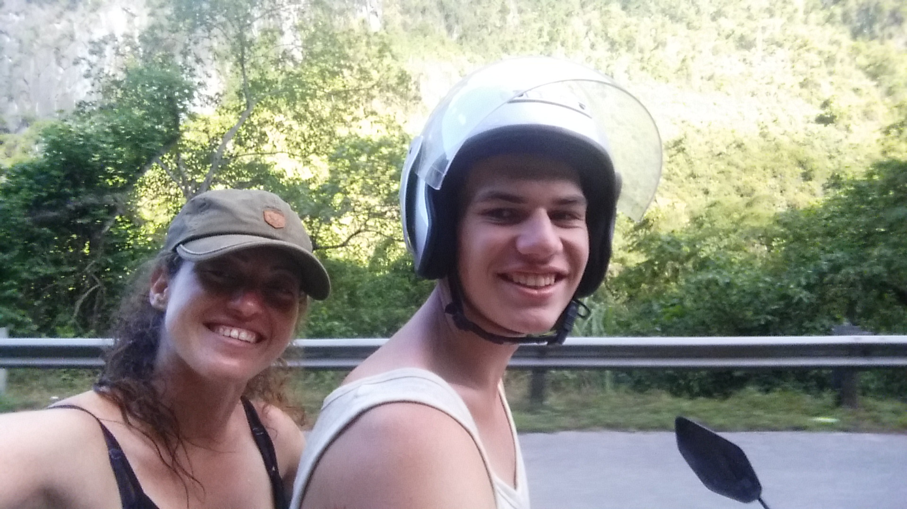
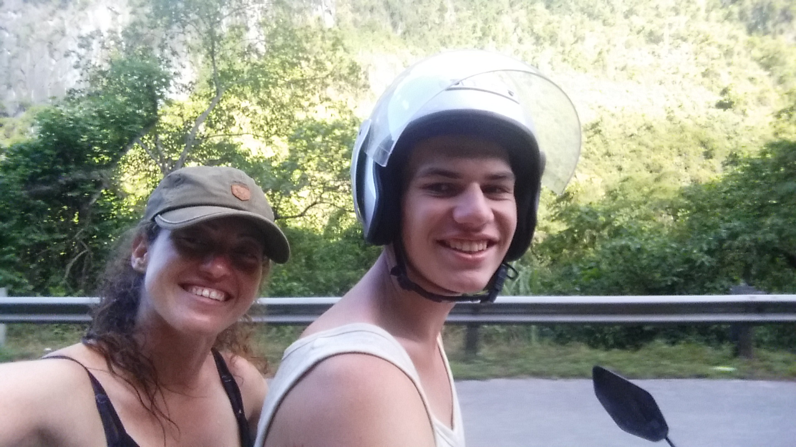

 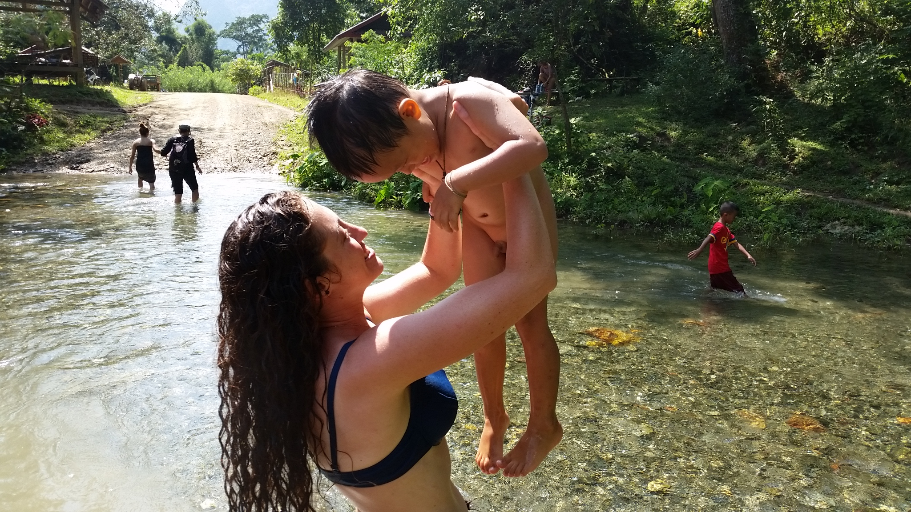
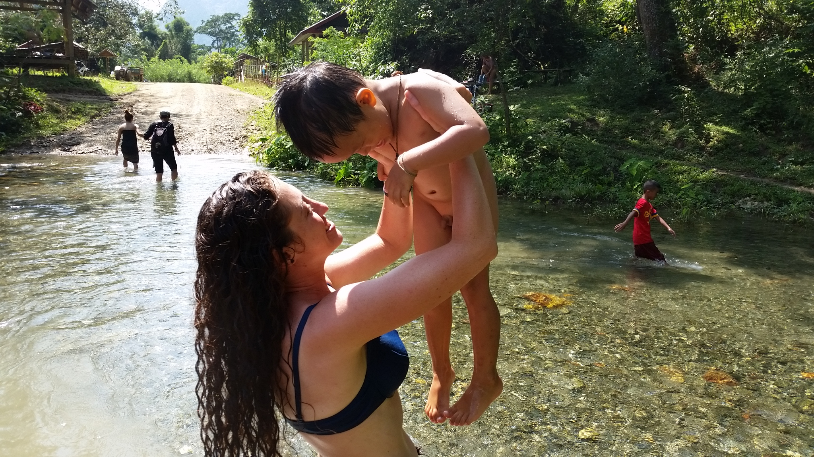
 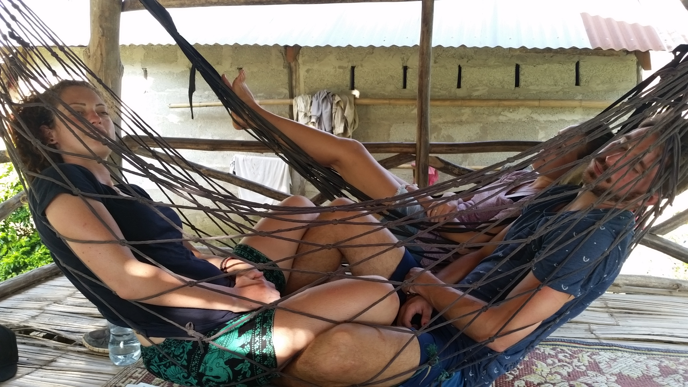 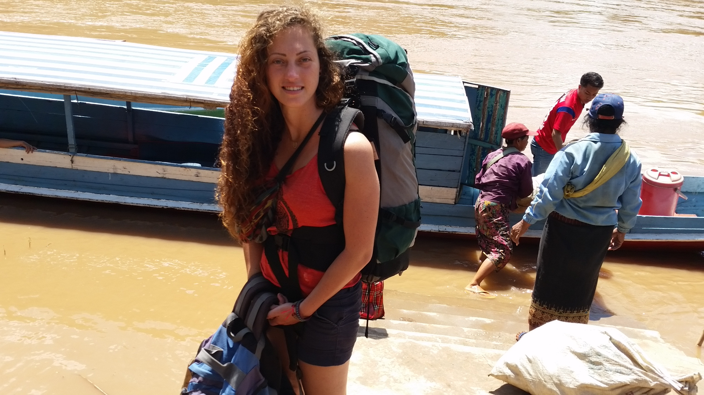
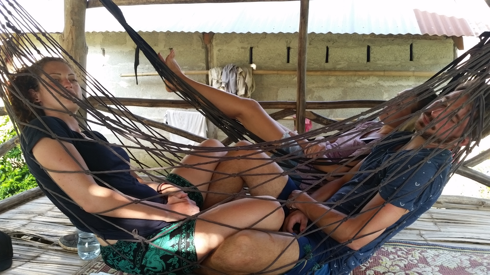 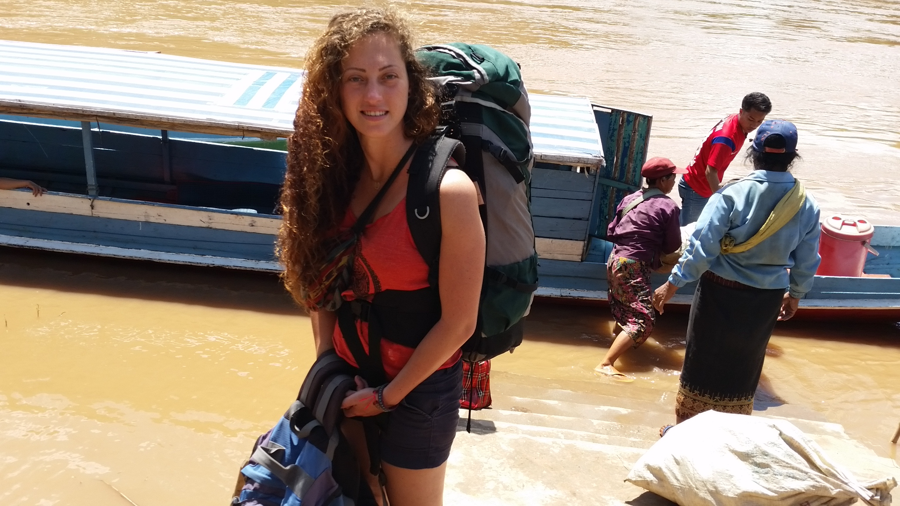
My name is Sahar Ben Baruch, I am 26 years old and originally from Lehavim.
I am a forth tear student in the Information Systems Engeneering and Software department of Ben Gurion University
I really like play tennis and pingpong and also like treaveling and watching movies.
In this website I will share things.
Hope you enjoy it :)
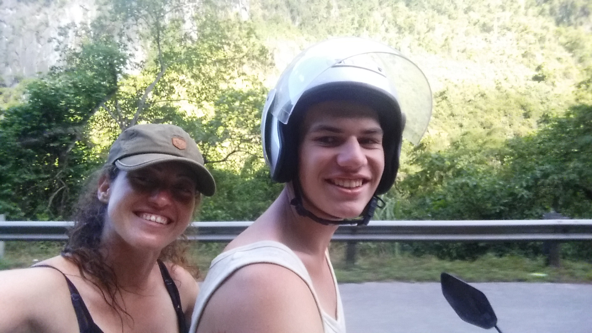
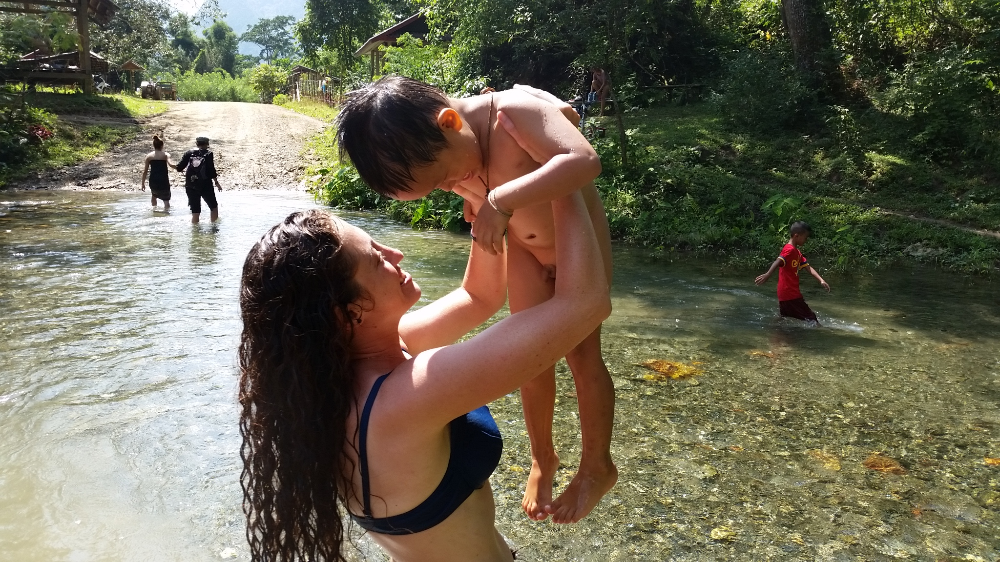
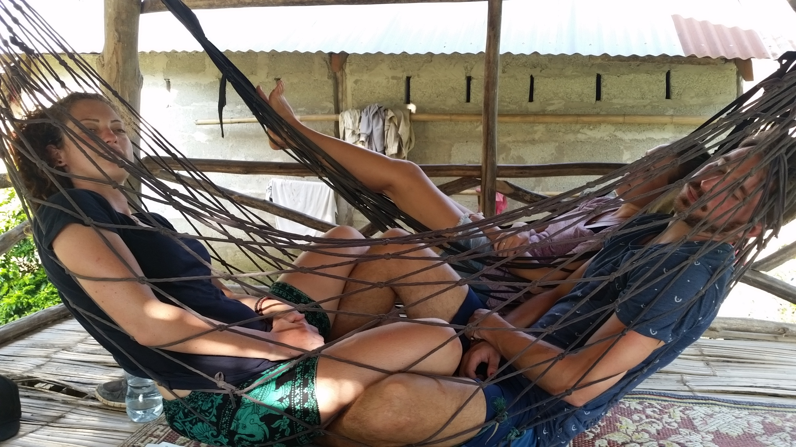 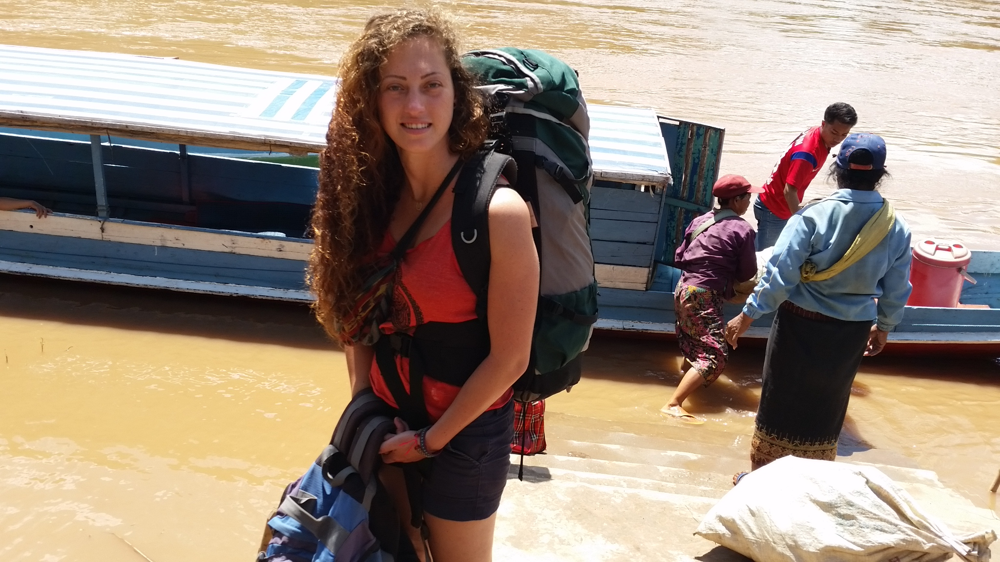